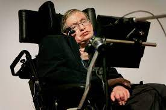

STEPHEN HAWKING
Theoretical Physicist
"Cosmic Explorer"
Stephen Hawking was not only a theoretical physicist but also a brilliant cosmologist, author, and science communicator. Born in 1942 in Oxford, England, he overcame the challenges of motor neuron disease to make groundbreaking contributions to our understanding of the universe. His popular science books, including "A Brief History of Time," have inspired millions to explore the mysteries of the cosmos.
Know More...
Accolades
- 1988: Companion of Honour
- 2006: Copley Medal
- 2009: Presidential Medal of Freedom
- 2012: Fundamental Physics Prize
- 2018: Breakthrough Prize in Fundamental Physics